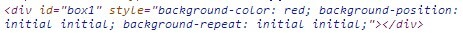

| 创建时间： | 2017/3/1 星期三 14:31 |
| 更新时间： | 2017/3/1 星期三 14:31 |
| 作者： | 王平安 |
标签：
1、相同权值情况下，CSS样式的优先级总结来说，就是——就近原则（离被设置元素越近优先级别越高）：
内联样式表（标签内部）> 嵌入样式表（当前文件中）> 外部样式表（外部文件中）。
2、权值不同时，浏览器是根据权值来判断使用哪种css样式的，哪种样式权值高就使用哪种样式。
下面是权值的规则：
标签的权值为1，类选择符的权值为10，ID选择符的权值最高为100。例如下面的代码：
p{color:red;} /*标签，权值为1*/
p span{color:green;} /*两个标签，权值为1+1=2*/
p>span{color:purple;}/*权值与上面的相同，因此采取就近原则*/
.warning{color:white;} /*类选择符，权值为10*/
p span.warning{color:purple;} /*权值为1+1+10=12*/
#footer .note p{color:yellow;} /*权值为100+10+1=111*/注意：（1）还有一个权值比较特殊——继承也有权值但很低，有的文献提出它只有0.1，所以可以理解为继承的权值最低。（继承是一种规则，它允许样式不仅应用于某个特定html标签元素，而且应用于其后代。如<p>便签内部的<span>标签就会继承该<p>标签的样式）；
（2）做网页代码的时，有些特殊的情况需要为某些样式设置具有最高权值，可以使用!important来解决。如下代码：
p{ color:red!important; /*!important要写在分号前 }这里注意当网页制作者不设置css样式时，浏览器会按照自己的一套样式来显示网页。并且用户也可以在浏览器中设置自己习惯的样式，比如有的用户习惯把字号设置为大一些，使其查看网页的文本更加清楚。这时注意样式优先级为：浏览器默认的样式 < 网页制作者样式 < 用户自己设置的样式，但记住!important优先级样式是个例外，权值高于用户自己设置的样式。
3、使用JS对样式进行操作时往往可通过两种方式：object.style.property=new style和object.className = new classname。前者是修改行间样式，JS代码执行后，审查元素可看到样式会直接显示在行间代码中，如：；后者则是在行间增加了新的class，而不会将具体的样式代码显示出来，
{kind=link}
{kind=link}